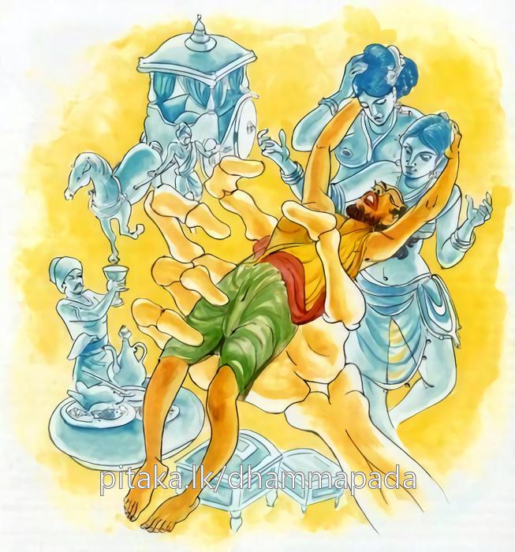

4-4 හිමියා පැතු ස්ත්රිය
මෙම කතාව ධම්මපද අටුවාවෙන් ද කියවන්න.
පුප්ඵානි හෙව පචිනන්තං බ්යාසත්තමනසං නරං
අතිත්තං යෙව කාමෙසු අන්තකො කුරුතෙ වසං.
මල් නෙලන්නකු මෙන් පස් කම් ගුණ නැමැති මල් සොයන, විවිධ කාමගුණයන්හි ඇලුනු සිතැති, කාමයන්හි සෑහීමට නො පැමිණියා වූ ම සත්ත්වයා මර තෙම සිය වශයට පමුණුවයි.

තව්තිසා දෙව්ලොව මාලභාරී නම් දෙව පුත්රයෙක් විය. ඔහු දවසෙක දෙවඟනන් පිරිවරා මල් උයනකට ගියේ ය. ඉන් බොහෝ ගණනක් දෙවඟනෝ ගස් නැගී මල් නෙලා බිම හෙලති. එ පමණක් ම දෙවඟනෝ ඒ මල් ගෙණ දේවපුත්රයාට පලඳවති. උන් අතර සිටි එක් දෙව්දුවක් එ වේලෙහි ගස උඩදී ම කලුරිය කළා ය.
දෙව්ලොවින් ගිලහුනු ඕ තොමෝ සැවැත්නුවරැ කුලගෙයක උපන්නා ය. ඒ ඇසිල්ලෙහි ජාතීන් සිහිකළ හැකි නුවණක් ද ඈට ලැබින. එයින් ඕ තොමෝ පෙර අත්බවෙහි තමන් තව්තිසා දෙව් ලොව මාලභාරී දේවපුත්රයාගේ බිරිඳ ව වුසූබව දැන නැවැතත් ඔහු වෙත ම උපදින්නට පතා ගෙණ නන් වැදෑරුම් පින්දම් කළා ය. සොළොසැවිරිදි කල සරණ ගියා එහි ද ලහබත් පැකිබත් වස්වැසි බත් දෙමින් ‘මා හිමියා වෙත ඉපදීමට මෙය අත්තිකාරමෙක් වේ වා’ යි කියන්නී ය. භික්ෂූන් වහන්සේලා ඈ කියන බස් අසා ‘මෝ තොමෝ නිතර හිමියා ම පතා ය’ යි ඇයට පතිපූජිකා, යි නම් කළහ. බොජුන්හල හැම ද පිළියෙල කරනී ඕ තොමෝ ය. පැන් පෙරා තබන්නීත් අසුන් පණවන්නීත් ඕ ය. මෙ දවස ලහබත් ඈ දෙනු කැමැති අන්ය මනුෂ්යයෝ ද ‘දුවනිය! මේවා ද පිළියෙල කොට සංඝයාට පිළිගන්වනු මැනැවැ’ යි නොයෙක් දානොපකරණ ගෙණවුත් ඇයට භාර දෙති. මේ සඳහා නිතර විහාරයට යන එන ඇය එක පියවරෙන්හි කුසල්දම් සපණසක් ලබයි.
මෙසේ පින්කම්හි යෙදී සිටි ඇගේ කුසෙහි නිසිකල්හි දරුගැබෙක් හටගත්තේ ය. දස මසක් ගිය තැනැ ඕ පුතකු වැදූ ය. ඒ දරු පා නගා ඇවිදින කාලයෙහි අනික් පුතෙකැ යි මෙසේ පිළිවෙළින් පුතුන් සතර දෙනකු ලැබූ ය. දවසක් දන් දී පුද වෙසෙස් පවත්වා බණ අසා පන් සිල් රැක සවස් ව ගිය කල්හි හදිසියේ හටගත් ලෙඩකින් කලුරිය කොට පෙර අත්බවෙහි තම හිමි ව විසූ මාලභාරී දෙව්පුත් වෙත ම උපන්නා ය. එහි අනික් දෙවඟනෝ දෙව්පුත්හට ඒ තාක් ම මල් පලඳවිමින් හුන්නෝ ය. දේවපුත්ර තෙමේ ‘සොඳුර! උදය පටන් තී නො දැක්කෙමි, ගියෙහි කොහි දැ’ යි ඇසී ය. ඕ තොමෝ මම මෙ තැනින් චුත ව ගොස් සැවැත්නුවරැ කුලගෙයක උපන්මි’ යි. කිවු ය. ‘සරණ ගියා දැ’ යි ඇසූ විට ‘ඔව් සරණ ගියෙමි’ යි කිවු ය. ‘කොපමණ කල් එහි විසුවෙහි දැ’ යි ඇසූවිට ‘දස මසක් මවු කුසැ, සොළොස් වියේ දී සරණ ගියා, ඒ සරණයෙන් පුතුන් සතරදෙනකු ලැබුවා’ යි කිවු ය. තව මොක ද කෙළෙහි’ යි ඇසූවිට ඔබ ම පතා ඔබ ගැන ම සිතා දන් පින් කොට එ පිණෙන් නැවැත ඔබ වෙත ම උපන්මි’ යි කීවා ය. දේවපුත්ර තෙමේ ‘මිනිසෙකුගේ පරමායුෂය කොතරම් දැ යි ඇසුයේ ය. ‘අයියෝ! බොහොම ටික යි, වැඩිම ගණන අවුරුදු සියයක් පමණැ යි කිය යුතු ය’ යි කී විට ‘ආ! ඇත්ත ද, ඔපමණ ටික දැ’ යි ඇසී ය. ඔව්! හිමියෙනි! බොහො ම ටිකැ’ යි කිවූ. ‘මොක ද, ඔතරම් අඩු දිවිපැවැතුම් ඇති මිනිස්සු නින්දෙන් කෙළිසෙල්ලමෙන් කල් දවස යවත් ද, නැත, දන් පින් කෙරෙත් දැ’ යි ඇසී ය.
‘මොකට අසන්නහු ද, අසඞ්ඛ්යයක් ආයු ගෙණ උපන්නවුන් සේ, ජරාමරණ නැත්තවුන් සේ මිනිස්සු වරදෙහි බැඳී අපරාධ කෙරෙමින් සතුන්මැරීම් හොරකම්කිරීම් කාමයෙහි වරදවා හැසිරීම් බොරුකීම් රා අරක්කු බීම් ආදී හැම දුශ්වරිතයක් ම කරමින් අනුන් තළා පෙළා අන්සතු ඉඩ කඩම් පැහැර ගණිමින් බොරු නඩු බොරු සාක්කි කියමින් මානයෙන් අහඞ්කාරයෙන් දරදඬු ව මහණ බමුණන්ට නින්දා පරිභව කරමින් වැඩිහිටියන්ට නිගා කරමින් මවු පියනට හිංසා කරමින් පරලොවක් නැති සේ කර්මවිපාකයක් නැති සේ සලකා මසුරුමලෙන් බැදී ජීවත්වෙති, අද මිනිස්ලොව මිනිසුන් නො කරණ පව්කමෙක් නො පණත් කමෙක් නැත, වස්තු තෘෂ්ණාවෙන් බැඳී උනුන් ඇණ කොටා ගණිති, බේබදුකම් කරති, සල්ලාලකම් කරති, ගෙයක් පාසා සූදු පිට්ටනිය, අඹුසැමි දෙපොල ම සූදුපිටියේ ය, පරපුරුෂ සේවන පරසත්රී සෙවන ආදී වූ ජඩකම්වල නිමාවක් නැත, මිනිසුන් තුළ විලිබිය ඇත්තේ ම නැත, කුඩා කොළු කෙළි පටන් මහලු මැහැලියන් තෙක් හැම ගෑණු පිරිමි කෙනෙක් ම ලජ්ජාභය දෙකින් තොර ය, ඒ නිසා තිරිසනුන් සේ දිවි යවති’ යි කිවු ය.
එ කල දෙව්පුත් තෙමේ ‘සොඳුර! අවුරුදු සියයක් පරමායුෂය කොට සිටි මිනිස්සු මෙසේ නිදත් නම්, පමාවෙත් නම්, නො පණත් කම් කරත් නම්, කො තරම් අයුතු ද එය, අය්යෝ! ඔවූහු කවදා දුකින් මිදෙත් ද, මිනිස් ලොව අවුරුදු සියයෙක් තව්තිසා වැසි අපට එක් දවසෙක් වෙයි, එ දවසින් තිස් දවසෙක් මසෙක් වෙයි, එ මසින් දොළොස් මසෙක් අවුරුද්දෙක් වෙයි, එ අවුරුද්දෙන් අවුරුදු දහසෙක් අපගේ ආයුකාලය’ යි, එය මිනිස් ගණනින් කෝටි හැට ලක්ෂයෙකැ යි කී ය.
දෙවියන්ගේ ආයුෂය මෙසේ බැවින් ඒ දේවපුත්රයාහට එක් දවසෙකුදු ඉක්ම නො ගියේ ය. ඒ කාලය මොහොතක් පමණ විය. මඳ ආයු ඇති මිනිසුන් දක්පින්කම් ඈ කිරීමෙහි පමාවීම තමනට කරගන්නා ලොකු නපුරෙකි.
පසුදා ගමට වැඩි භික්ෂූන් වහන්සේලා ආසනශාලාව නො හැම ද අසුන් නො පණවා පැන් නො එළවා තිබෙනු දැක ‘පති පූජිකා තොමෝ කොහි දැ’ යි ඇසූහ. ‘ස්වාමීනි! ඈ කොතැන්හි දකින්නාහු ද, ඔබ වහන්සේලා ඊයේ වලඳා වැඩියපසු සවස හදිසියෙන් නැගුනු ලෙඩකින් මළා ය’ යි එහි සිටියෝ කීහ. සාමාන්ය භික්ෂූන් වහන්සේලා ඈ කළ උවැටැන් සලකා කඳුලු වැගිරවූහ. රහතුන් වහන්සේට ධර්මසංවේගය උපන. උන්වහන්සේලා විහාරයට ගොස් බුදු රජුන් කරා පැමිණ ‘ස්වාමීනි! පතිපූජිකාව ඉතාඕනෑකමින් නිතර නොයෙක් පින්දම් කොට තමන්ගේ හිමියා ම පතමින් සිටියා, හදිසියෙන් මළා ය, ඈ කොහි උපන්නී දැ’ යි ඇසූහ. ‘පැතූලෙසට ම හිමියා වෙත උපන්නී ය’ යි වදාළවිට ‘ස්වාමීනි! ඈ එහි නැතැ’ යි කීහ. ‘ඔය ඉන්නා හිමියා පතා, ඈ පින් කළා නො වේ, පෙර ජාතියෙහි. ඈට හිමි වූයේ තව්තිසා දෙව්ලොවැ වැසි මාලභාරී දේවපුත්රයා ය, ඔහුට මල් පලඳවන තැනේ දී මෝ තොමෝ එ තැනින් චුත ව මෙහි ඉපිද නැවැත එහි ම උපන්නී ය’ යි වදාළ සේක. ‘එහෙම ද ස්වාමීනි! යි භික්ෂූන් ඇසූවිට ‘ඔව්, මහණෙනි!’ යි වදාළ සේක. සත්වයන්ගේ ජීවිතය කොතරම් ටික ද, උදයවේලේ ඕ තොමෝ අප වැලඳෙව්වා ය, සවස් වේලේ මළා ය’ යි භික්ෂූන් කතා කරන්නට වූ කල්හි ඒ අසා බුදුරජානන් වහන්සේ ‘ඔව් සත්වයන්ගේ ජීවිතය දිග් එකෙක් නො වේ, එය ඉතා කෙටි ය, ඒ නිසා ම මාර තෙමේ. වස්තුකාම-ක්ලේශකාමයන්ගෙන් සෑහීමට නො පත් මේ සත්වයන් තම යටතට ගෙණ හඬව හඬවා විලාප කියව කියවා ගෙණ යා’ යි වදාරා මේ ධර්මදෛශනාව ද කළ සේක:-
පුප්ඵානිහෙව පචිනන්නං බ්යාසත්තමනසං නරං,
අතිත්තංයෙව කාමෙසු අන්තකො කුරුතෙ වසන්ති.
මල් කඩා රැස් කරන්නකු මෙන් පංචකාමගුණපුෂ්පයන් සොයන නොයෙක් පරිද්දෙන් පංචකාමගුණයෙහි ඇලුනු සිත් ඇති සත්වයා වස්තුකාම-ක්ලේශකාමයන්හි නො සෑහුනහු ම මාර තෙමේ වසඟ කර ගන්නේ ය.
පුප්ඵානිහෙව පචිනන්තං = මල් කඩා රැස්කරන්නකු මෙන්.
බ්යාසත්තමනසං නරං = තදින් ඇලුනු සිත් ඇති සත්වයා.
පංචකාමය දක්වනු ව ‘පුප්ඵානි’ යනු යෙදින. පංචකාමයෙහි, තදින් ඇලුනුහු සඳහා ය ‘බ්යාසත්තමනසං නරං’ යෙදුනේ,
අතිත්තං එව කාමෙසු = කාමයන්හි නො සෑහුනහු ම.
අතිත්තං’ යන්නෙහි මූලය තිපි’ හෝ තිස’ යන්න ය. එයින් පිණායෑම හෝ සෑහීම කියැ වේ. යම් දෙයක් කරණ කොට යමක්හුගේ පිණායෑමක් හෝ සෑහීමෙක් නො වේ නම්, ඒ අතිත්ත නම් වේ.
කාම ශබ්දය, ‘කාමා හි චිත්රා මධුරා මනොරමා වීරූපරූපෙන මථෙන්ති චිත්තං’ යනාදී තන්හි ආයේ මනවඩන රූප ශබ්දාදී වූ අරමුණු විෂය කොට ය. ‘ඡන්දො කාමො, රාගො කාමො’ යනාදි තන්හි ආයේ ඡන්දරාගයෙහි ය. ‘කිලෙසකාමො, කාමූපාදානං’ යනාදි තන්හි ලෝභයෙහි ආයේ ය. ‘අත්තකාම පාරිචරියාය වණ්ණං භාසෙය්ය’ යනාදී තහි මෙවුන්දම්හි දක්නා ලැබේ. ‘සන්තෙත්ථ තයො කුලපුත්තා අත්තකාමරූපා විහරන්ති’ යනාදියෙහි ආයේ හිත කැමැත්තෙහි ය. ‘අත්තාධීනො අපරාධීනො භුජිස්සො යෙන කාමං ගමො’ යනාදියෙහි දක්නේ ස්වෛරීභාවයෙහි හුනුයේ ය. මෙහි මන වඩන රූප ශබදාදි වස්තු කාමයෙහි හා තද්විෂයකක්ලේශකාමයෙහි ද වැටුනේ ය. [1]
මන වඩන රූප-ශබ්ද-ගන්ධ-රස-ස්ප්රෂ්ටව්ය කාමයෝත් දැසි-දස්-කෙළි-කොළු-ඉඩකඩම්-ගේදොර- හරකබාන-රන්-රිදී-මුතු-මැණික් ඈ කාමයෝත් සත්වලෝකයට හිත පිණිස නො වෙති. එහෙත් අඥයෝ ‘හිතකරයහ’ යි ගණිති. එසේ ගන්නෝ කමනීය වස්තූන්ගේ රස විඳීමෙන් ලැබෙන ක්ෂණික වූ සැප සොම්නස් දෙක ස්ථිර එකක් සේ සලකා ගැණීමෙනි. ‘කාමයෝ අහිතකරයහ, බොහෝ ආදීනව ඇත්තෝ ය, මඳ වූ ආස්වාද ඇත්තෝ ය, මෙ ලොව පරලොව දෙක්හි ම දුක් උපදවන්නෝ ය, දැඩි ආයාස ඇත්තෝ ය’ යි බුදුරජානන් වහන්සේ කාමයන්ගේ ඇති තතු පැහැදිලි කළ සේක. තව ද යමෙක් හස්තමුද්රා ය, නිරතුරු ගිණීම ය, පිඩුකොට ගිණීම ය, ගොවිතැන් කිරීම ය, වෙළඳාම් කිරීම ය, ගෙරි රැකීම ය, රජුන්ට උවැටැන් කිරීම ය, රාජපුරුෂභාව ය, දාස මෙහෙවර ය යනාදි නොයෙක් උස් පහත් කටයුතුවලින්, සීත-අවු-සුළං නො බලා ඉන් මැඩෙමින්, මැසි-මදුරු-කුරු කුහුඹු-නයි-පොළොන් ආදීන්ගෙන් පීඩා විඳිමින්, බඩගිනි උසුලමින් ධන ධාන්යදිය රැස් කෙරේ ද, ඔහුට මේ සියලු දුක් කාමයන් නිසා ම කාමයන් හේතුකොට ම විඳීමට සිදු වන්නේ ය.
“ඉධ මහානාම! කුලපුත්තො යෙන සිප්පට්ඨානෙන ජීවිකං කප්පෙති යදි මුද්දාය යදි ගණනාය යදි සඞ්ඛාතෙන යදි කසියා යදි වණිජ්ජාය යදි ගොරක්ඛෙන යදි ඉස්සත්ථෙන යදි රාජපොරිසෙන යදි සිප්පඤ්ඤතරෙන සීතස්ස පුරක්ඛතො උණ්හස්ස පුරක්ඛතො ඩංසමකසවාතාතපසිරිංසපසම්ඵස්සෙහි රිස්සමානො ඛුප්පිපාසාය මීයමානො, අයං මහානාම! කාමානං ආදිනවො සන්දිට්ඨිකො දුක්ඛන්ධො කාමහෙතු කාමනිදානං කාමාධිකරණං කාමානමෙව හෙතු” යනු එහි දෛශනා ය.
මෙසේ දුක් කරදර විඳ ද දවසෙහි දිවි රැකුමට පමණවත් යමක් සපයා නො ගත හැකි වී නම් වැලපෙයි. ලෙහි අත් ගසා හඬයි. උමතු වෙයි. මෙ ද කාම හේතුවෙන් ම වූ විපත් රැසෙකි. දිවි නො තකා කළ උස් පහත් හැම ක්රියාවකින් ම යම්කිසි ධනයක් උපයා ගත්තේ නම්, එය සොරුන්ගෙන්, රජුන්ගෙන්, ගින්නෙන්, ජලයෙන්, සතුන්ගෙන් රැකගත යුතු ය. යම් ලෙසකින් එය සොර, සතුරු ආදීනට හසු වී නම්, ඒ තැනදී හඬමින් වැලපෙමින් උමතු බවට ද යෙයි. මෙ ලොව ලැබෙන මේ දුක් රැසට හේතු ද කාමයෝම ය.
තව ද මේ ලෝකයෙහි රජවරු, රජවරු හා ක්ෂත්රියයෝ, ක්ෂත්රියයන් හා බ්රාහ්මණයෝ, බ්රාහ්මණයන් හා ගෘහපතියෝ, ගෘහපතියන් හා මවු, පුතු හා පුතු, මව හා පියා, පුතු හා පුතු, පියා හා, සහෝදරයා, සහෝදරිය හා සහෝදරිය, සහෝදරයා හා යහළුවා, යහළුවා හා වාද කොට කලහ කොට අත්පාවලින් කැටකැබලිතිවලින් ලීපොලුවලින් කඩුකිරිච්චිවලින් තවත් නොයෙක් කුදු මහත් ආයුධවලින් විෂධූමවලින්, ඇණ කොටා ගෙණ එ තැන ම මිය යති. ඉඳුම් හිටුම් නැති ව යෙති. මේ ආදී සියලු බිහිසුණු අපරාධවලට කරුණු වන්නෝ කාමයෝ ම ය. කාමහේතුවෙන් ම මේ අපරාධයෝ සිදු වෙති. තව ද රජහු පස මිතුරන් ජීවගාහයෙන් ගෙණ තළා, පෙළා, අත්පාකන්නාසා සිඳ දම්මවා, එයිනුදු සෑහීමට නො පත් ව, හිස්කබල උපුටවා, ගිනියම් කළ යගුලි ඊ මත තබවා, හිස්මොළ උතුරවා හරවති. ඔලුවෙහි හම ගලවා බොරලුකැට උලවා, එය සකක් මෙන් සුදු කරවති. තෙල්රෙදි ඇතුල් කරවා කටෙහි ගිනි දල්වති. සිරුර මුළුල්ල තෙල් රෙදි වෙළවා, ගිනි තබ්බවති. අත තෙල්රෙදි වෙළවා ගිනි තබ්බවති. බෙල්ලේ පටන් ඉඟටිය දක්වා සම ගලවා පහතට හෙලවා, රෑණකින් බැඳ ඇවිද්දවති. නැවැත වරක් බෙල්ලේ පටන් සම ගලවා ඉඟටියෙහි රඳවා, ඉඟටියෙහි පටන් බොළට දක්වා සම ගලවා රෑණින් බැඳ ඇවිද්දවති. දෙදන, දෙවැලමිට යකඩ හුලින් පොළොවෙහි සවිකරවා, අවට ගිනියම් කරවති. දෙ මුවහත් බිලියෙන් ඇඟ මස් කඩවති. කහවණු පමණට ඇඟ මස් කඩා දමවති. සිරුරෙහි කාරම්දිය ඉස්වති. කණෙහි යවුල් ගසා, පොළොවට සවි කොට, සෙක්කුවක් සේ කරකවවති. ඇට තළා, පිදුරුබිස්සක් සේ කරවති. රත් වූ කකාළතෙල් ඇග ඉස්වති. දරුණු බල්ලන් ලවා කවති. දිවස් හුල හිඳුවා දම්මවති. හිස ගසා දම්මවති. මේ ආදී බිහිසුණු දුක් ද කාමයන් නිසා මෙ ලොවදී ම ලැබෙන්නේ ය. මේ දුක්වලට හේතු වන්නෝ කාමයෝ ම ය. මේ හේතුවෙන් කයින් වචනයෙන් සිතින් හැම පව්කමක් කොට මරණින් මතු සතර අපායයෙහි ඉපිද කප්කෙළ ගණනක් සත්වයෝ දුක් විඳිති. තක්කජාතක-නළිනීජජාතක- මුදුලක්ඛණජාතක-සඞ්කප්පජාතක-ආසංකජාතක-තෙලපත්තජාතක-සමිද්ධිජාතකාදිය බැලිය යුතු ය.
මෙසේ කාමයන් නොයෙක් නපුරෙන් හැසී ගැවසී සිටි බැවින් “අට්ඨිකඞ්ඛලූපමා භික්ඛවෙ! කාමා, මංසපෙසූපමා භික්ඛවෙ! කාමා, තිණූක්කූපමා භික්ඛවෙ! කාමා, අඞ්ගාරකාසූපමා භික්ඛවෙ! කාමා, සුපිනකූපමා භික්ඛවෙ! කාමා, යාචිතකූපමා භික්ඛවෙ! කාමා, රුක්ඛඵලූපමා භික්ඛවෙ! කාමා, අසිසූනූපමා භික්ඛවෙ! කාමා, සත්තිසූලූපමා භික්ඛවෙ! කාමා, සප්පසිරූපමා භික්ඛවෙ! කාමා” යි වදාළ සේක.
මඳ වූ රස විඳීම් ඇති බැවින් කාමයෝ ඇට සැකිල්ලකට බඳු උපමා ඇත්තෝ ය. බොහෝ දෙනකුට සාධාරණ බැවින් මස්වැදැල්ලක් සේ ය. දවන බැවින් තණහුලක් සේ ය. මහත් ව තවන බැවින් අඟුරුවළක් සේ ය. මඳ කලක් ම පවත්නා බැවින් සිහිනයක් සේ ය. තාවකාලික බැවින් ණයට ඉල්ලා ගත්තක් සේ ය. අඟපසඟ බිඳින බැවින් රුක්පලයක් සේ ය. කපන කොටන බැවින් කඩුව හා මස්ළොඹුවක් සේ ය. විනිවිද යන බැවින් සැත්හුලක් සේ ය. බිය සැක සහිත බැවින් නයිහිසක් සේ ය, යනු එහි ඉතා කෙටි තේරුම ය. විස්තර ඉදිරියෙහි එන්නේය.
මෙසේ නොයෙක් නපුරෙන් කිසිවිටෙකත් නො වෙන් ව පවත්නා වස්තුකාම- ක්ලේශකාමයන්හි, සෙවීමෙන්, ලැබීමෙන්, වැලඳීමෙන්, තැන්පත් කර තැබීමෙන් සෑහීමට නො පැමිණියහු ‘අතිත්තංයෙව කාමෙසු, යන මෙයින් දැක්වූහ.
අන්තකො කුරුතෙ වසං=මාර තෙමේ වසඟ කරන්නේ ය.
කවරකු වසඟ කරන්නේ ද, යත්:- යට කී ලෙසින් කාමයන්හි ගැලී සිටියහු ය. කාමයෙහි බැස ගෙණ එයින් ම අන්ධ ව යුතු-අයුතු දැනීමෙහි අපොහොසත් ව වසනා පුද්ගලයා හඬව හඬවා වලප්ව වලප්වා ගෙණ ගොස් තම වසයෙහි කරන්නේ ය. ‘අන්තං විනාසං කරොතීති = අන්තකො’ යනු මෘත්යුමාරයා ය.
ධර්මදේශනාවගේ අවසානයෙහි බොහෝ දෙන සෝවන්ඵලාදියට පැමිණියෝ ය. දේශනාව මහජනයාට වැඩ සහිත වූ ය.
පතිපූජිකා වස්තුව නිමි.
-
2-4 ‘කාමරතිසන්ථවං’ පරිකථා බලනු. ↑